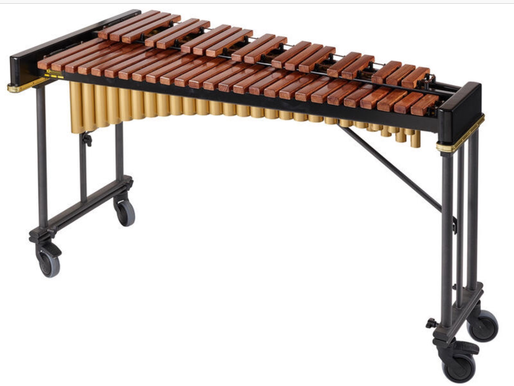

My Vocabulary Page
trade v(i,t) //
(business) buy and sell things
trade with somebody
1.1/ Early explorers traded directly with the Indians.
1.2/ For centuries, Native Americans traded with European settlers.
trade in something
1.3/ The firm openly traded in arms.
1.4/ The company has been trading in oil for many years.
1.5/ After settling in Madeira they began trading in flour, sugar, and leather.
trade in something with somebody
1.6/ Her family traded in textiles with the Far East.
trade something
1.7/ Our products are now traded worldwide.
1.8/ Our books are traded throughout Asia.
trade something with somebody
1.9/ "Italy and the G7 countries continued to trade wood with Russia."
a trading partner
1.10/ "Japan is now in first place as a trading partner of Hong Kong."
v(t) exchange something that you have for something that somebody else has
trade (somebody) something
2.1/ "Trade you secrets for the blood of the dead I will."
2.2/ "Trust me I will trade Whatever I have to get a taste."
trade something with somebody
2.3/ I wouldn't mind trading places with her for a day.
2.4/ "If you had to trade girlfriends with another player,
who would you pick?"
trade (somebody) A for B: give somebody A, get B
2.5/ She traded her posters for his CD.
2.6/ I will trade you some of my chocolate for some of your ice cream.
2.7/ "Would you trade your freedom for anything?"
v(i,t) be bought and sold, or buy and sell something, on a stock exchange
3.1/ Shares were trading at under half their usual value.
3.2/ Shares in the company haven't been publicly traded since 1998.
3.3/ "In Hong Kong, a local businesswoman is suing a US bank for allegedly
trading accumulators for her account without her authorization."
v(i) exist and operate as a business or company
4.1/ The firm has now ceased trading.
4.2/ The firm now trades under the name Lanski and Weber.
4.3/ "The company's corporate structure will also remain the same,
but it will trade under a new name from December 1."
trade n(u) //
the activity of buying and selling or of exchanging
goods or services between people or countries
international trade, global trade, foreign trade
5.1/ "Hong Kong was transformed from a group of sleepy fishing villages
into a center of international trade and finance."
5.2/ "Large-scale food producers in India benefit from foreign trade."
5.3/ Does any country not rely on foreign trade for its economic prosperity?
trade in something
5.4/ The country's trade in manufactured goods has expanded
in the last ten years.
5.5/ "Today global trade in grains is part of our food system ensuring
to fill the gap between supply and demand."
5.6/ "Turkey and Kazakhstan combined are expected to account for
50% of global trade in flour."
5.7/ "Between 1990 and 2000 the global trade in oil increased
by 9.5 billion barrels."
trade with somebody/something
5.8/ "By 1985, the value of Hong Kong's trade with China
exceeded that with the US."
trade between A and B
5.9/ Trade between the two countries has increased.
trade volume
5.10/ "On a monthly level, the real estate trade volume in April 2022
alone was up by 1 per cent."
5.11/ "In the EU, the retail trade volume decreased by 6.6%
for food, drinks and tobacco and by 3.2% for non-food products,
while it grew by 2.8% for automotive fuels."
(remark: an agreement or arrangement of buying and selling
is called a business deal)
n(c) (industry) a particular type of business
6.1/ He works in the retail trade.
6.2/ "There were housing shortages and the real estate trade
enjoyed a boom from 1954 to. 1957."
6.3/ "These professionals in the real estate trade do not own houses,
office buildings, strip centers, warehouses, or malls."
6.4/ "Local small business owners, shops, restaurants and many others rely
heavily on the tourist trade in Hong Kong to make their living."
n(singular) the trade: a particular area of business
and the people or companies that are connected with it
7.1/ Their company is respected and well known in the trade.
7.2/ It's a trade association that represents all segments
of the dairy industry.
7.3/ People who work in the trade can buy their books at a discount.
n(c,u) a job, esp one that involves working with your hands
and that requires special training and skills
8.1/ Dressmaking is a highly skilled trade.
8.2/ When she leaves school, she wants to learn a trade.
8.3/ He was a carpenter /'ka:rpəntər/ by trade.
the tools of your trade
8.4/ These organizations use bugging and tapping as everyday
tools of their trade.
8.5/ Poets are infatuated with language, the tools of the trade.
n(c) a jack of all trades
8.6/ "A jack of all trades is a master of none."
8.7/ "A jack of all trades is someone who is reasonably skilled at
a lot of things but not deeply skilled at any."
venture n(c) //
a business project or activity, esp one that involves taking risks
1/ A disastrous business venture lost him thousands of dollars.
start/initiate a venture
2/ "After losing his job due to the downsizing decision by his previous company,
Thomas initiated a business venture to offer web design services."
go on a venture
3/ "These two women became inseparable ever since they met in school
and they recently decided to go on a business venture together."
in a venture
4/ "Taylor plans to invite Amber, her best friend to join her
in this business venture.
5/ "Why do you think you will be success in this business venture?"
a risk in a venture
6/ "The greatest risk in a business venture is borne by the entrepreneurs."
7/ "Creators take risks by pushing boundaries and exploring new artistic territories,
while entrepreneurs take calculated risks in business ventures."
risk something in a venture
8/ "Many investors might hesitate to risk money in a business venture
if they knew it would be difficult to withdraw whenever they desired."
fail a business venture
9/ "Whenever I failed a business venture, I would start to get these
harrowing thoughts and feelings popping up."
types of business ventures: an initial public offering (IPO),
a merge and acquisition (M&A), opening a new branch of business,
opening a new business location, an investment in a blue ocean market
venture v(i) //
go somewhere even though you know that
it might be dangerous or unpleasant
1/ He's never ventured abroad in his life.
2/ She would not have dared venture here alone.
venture into somewhere
3/ They ventured nervously into the water.
4/ She ventured cautiously into the room.
venture from A to B
5/ "I was a wimp and I never ventured from my neighborhood to Downtown."
venture to somewhere
6/ Some of the men ventured farther out to sea.
7/ We ventured down to the south coast over the weekend.
8/ "Venture to the neighboring village, where you'll tuck into a local feast
and bond with your group over your shared experience."
venture beyond somewhere
9/ They rarely ventured beyond their local market town.
10/ "Until they ventured beyond the horizon, the misapprehension that
the Earth was flat had limited exploration for centuries."
v(t) say or do something in a careful way,
esp because it might upset or offend somebody
venture an opinion
11/ She hardly dared to venture an opinion.
12/ She tentatively ventured the opinion that the project would be too expensive
to complete, but the boss ignored her.
venture that ...
13/ He ventured that the data might be flawed.
venture to do something
14/ I ventured to suggest that she might have made a mistake.
see also: dare, go out on a limb
trade off v //
trade off something: accept something bad in order to have something good
trade off A for B: accept (the loss of) A in order to get B
1/ They are uneasy with trading off future revenue for easy cash now.
2/ I get up early and trade off sleep for exercise.
3/ "People would be willing to trade off integrity for a better individual outcome."
4/ "Consumers pursuing long-term goals often face choices that
trade off immediate pleasure for long-term benefits."
5/ "To choose death to avoid further loss of dignity is not to trade off
dignity for desire, but rather choosing death for the sake of dignity."
trade off A against B: accept (the loss of) A in order to get B
6/ Economic policy is about trading off costs against benefits.
7/ "We won't trade off privacy against other objectives."
trade-off n(c) //
the act of balancing two things that are opposed to each other
n(singular) a trade-off between A and B
1/ There is a trade-off between doing the job accurately and doing it quickly.
2/ There is a trade-off between the benefits of the drug and
the risk of side effects.
3/ She said that she'd had to make a trade-off between her job and her family.
n(singular) a trade-off for something
4/ For some car buyers, lack of space is an acceptable trade-off
for a sporty design.
in a trade off for something
5/ "Personal data is constantly recorded, and individuals often willingly share
their personal data in a trade-off for convenience or other benefits."
ply v(t) //
sell or to work regularly at something, esp at a job that involves selling things
1/ Dealers are openly plying drugs in school playgrounds.
2/ "Street hawkers ply their wares in traffic."
ply your trade
3/ Fishermen in small boats ply their trade up and down the coast.
4/ Drug dealers openly plied their trade in front of children.
ply your trade as somebody
5/ This is the restaurant where he plied his trade as a cook.
ply your wares
6/ The market traders were loudly plying their wares.
(idiom) ply for business(/trade/hire):
look for customers or passengers in order to do business
7/ There are never any taxis plying for hire in our area.
8/ Continental airlines ply for trade in the UK.
9/ "Hawking their wares here and there, Hong Kong's hawkers are
plying for trade all day long."
ply n(u) //
a layer of something such as wood or paper, or a thread
that is wrapped with other threads to form yarn or rope
1/ Buy a sweater in four-ply yarn.
2/ Knit a sweater with four-ply yarn.
3/ "Get yourself a box of 3-ply masks for your workplace or home."
4/ "A pack of fourty 2-ply facial tissues"
diaspora n(c,u) //
n(singular) the movement of people from any nation or group away
from their own country; people who have moved away from their own country
1/ The diaspora occurred in the mid-19th century and early 20th century.
2/ "Because of the Romani diaspora throughout Europe and West Asia,
Romani language developed in close contact with European and Iranian languages."
3/ "Canada's Hong Kong diaspora helps new arrivals with jobs,
housing and psychotherapy."
be/live in (a) diaspora
4/ People in a diaspora are often more religious than in their homeland.
5/ A majority of Assyrians now live in diaspora in many different countries.
a diaspora people, a group of diaspora people
6/ "Unlike the people in the diaspora in Europe and America,
the Middle East diaspora is complex."
7/ Nearly two-fifths of Spain's foreign residents come from the Latin diaspora
- mostly from Ecuador and Colombia.
a diaspora language
8/ "Romani is a diaspora language par excellence as it is an Indic language
spoken exclusively outside the Indian subcontinent."
a diaspora movement
9/ "South Korean diaspora movement during the 1990s caused the homeland
fertility rate to drop when a large amount of the middle class emigrated,
as the rest of the population continued to age.
a diaspora community
10/ "He is now focusing on developing the Hong Kong diaspora community
and strengthening the identity of Hong Konger in Canada.
the Diaspora: the movement of the Jewish people away from
their own country to live and work in other countries;
Jewish people living and working in other countries
11/ "The Bible alludes to the Diaspora of Jews banished
from Israel by the Babylonians."
12 "The diaspora of Jews in the east developed very differently
from the diaspora in the west."
ventilate v(t) //
cause fresh air to enter and move around a closed space
1.1/ Ventilate the room well while applying the paint.
1.2/ The building is naturally ventilated.
be ventilated by something
1.3/ The bathroom is ventilated by means of an extractor fan.
1.4/ "In places that are largely ventilated by an air conditioner,
germs and pathogens can manifest."
well-ventilated, be well ventilated
1.5/ It's so important to ensure your classroom is well ventilated.
1.6/ "The office should be well ventilated, and windows opened from time to time."
1.7/ "Open doors and windows are the most obvious sign that
a space is well ventilated."
1.8/ "A well-ventilated room will instantly be more comfortable - creating
a more relaxed environment, while also making for a more productive workplace."
properly ventilated
1.9/ Public buildings must be safe, clean, well lighted, and properly ventilated.
poorly-ventilated, be poorly ventilated
1.10/ I work in a very poorly-ventilated building.
1.11/ "If one area of your home is poorly ventilated,
it can get warm or cold fast."
see also: a vent
v(t) be ventilated:
force air in and out of the lungs of a person who cannot breathe
easily on their own, using a special machine called a ventilator
2.1/ If her condition deteriorates, she will need to be ventilated
and admitted to intensive care.
2.2/ Coronavirus patients can develop severe pneumonia and can struggle
to breathe, often needing to be ventilated in intensive care.
ventilation n(u) //
the fact of allowing fresh air to enter and move around a room or building
1/ Make sure that there is adequate ventilation in the room
before using the paint.
be in good ventilation
2/ "My laptop was clean and placed in good ventilation."
3/ "The balloons need to be placed in good ventilation to
let the smell go off."
under(/in) good ventilation conditions
4/ "Use only under good ventilation conditions or with respiratory protection."
5/ "In poor ventilation conditions, the air is trapped in the room,
and the room becomes stuffy and humid."
leftover adj //
(before noun) remaining after all the rest has been used, taken, or eaten
leftover food
1/ There is some leftover chicken from last night's meal.
2/ Use any leftover meat to make a curry.
3/ "One of the best ways to cook leftover vegetables is to throw
what you have into a pan and mix together with your favourite flavour."
4/ "These Italian rice balls are made with leftover rice
and other easy ingredients."
5/ "Easy ham fried rice made with leftover rice and thrown together
in less than 20 minutes!"
a leftover item
6/ "If you have some leftover tiles hanging around, don't leave them
in the garage where you'll forget about them, or chuck them away."
7/ "Wake up early to finish any leftover homework."
n(plural) leftovers: food remaining after a meal
8/ This recipe can serve four easily, and the leftovers are
just as good eaten cold.
9/ "Use leftover rice to sop up something spicy."
bring/take/have leftovers for lunch
10/ "We both take leftovers for lunch the next day, and sometimes
have it for dinner the next day too."
11/ "I usually bring leftovers for lunch. When I do buy lunch out,
it's usually a whopping $10, which is way too much to spend every day!"
12/ We cook enough to have leftovers for lunch.
negotiate v(i) //
try to reach an agreement by formal discussion
negotiate with somebody
1/ The government will not negotiate with terrorists.
2/ "A labor union negotiates with the employer on behalf of the workers."
negotiate (with somebody) for something
3/ We have been negotiating for more pay.
4/ "Police officiers negotiated with the robbers for the hostages' release,"
negotiate (with somebody) about/on something
5/ They have refused to negotiate on this issue.
6/ "The labor union negotiates with the employer on wages,
benefits and working conditions."
negotiate between A and B
7/ "The United Nations try to negotiate between two countries
if they're fighting."
v(t) negotiate something: arrange or agree something by formal discussion
8/ We successfully negotiated the release of the hostages.
9/ "Knowing when to negotiate a contract is just as important as knowing
which terms to negotiate."
10/ "The treaty of Nanking was negotiated on 29 August 1842.
Hong Kong Island was ceded to Great Britain since then."
11/ "To successfully negotiate a business deal you have to be prepared,
observant, professional, and much more."
the zodiac n(singular) //
the imaginary area in the sky in which the sun, moon and planets
appear to lie, and which has been divided into twelve equal parts,
each with a special name and symbol
the signs of the zodiac
1/ "What is your zodiac sign?"
2/ "In Western astrology, the zodiac is divided into the following
twelve signs: Aries /'eri:z/,
Taurus /'tɔ:rəs/, Gemini /'dʒemɪnaɪ/,
Cancer /'kænsər/,
Leo /'li:əʊ/, Virgo /'vɜ:rgəʊ/,
Libra /'li:brə/,
Scorpio /'sgɔ:rpiəʊ/,
Sagittarius /'sædʒɪ'teriəs/,
Capricorn /'kæprɪkɔ:rn/,
Aquarius /ə'kweriəs/,
and Pisces /'paɪsi:z/.
3/ "You can find out your zodiac sign by knowing your birth date
and checking the zodiac chart."
4/ "I am a Leo and have been in a relationship with a Taurus woman
for a year and a half."
(adj) zodiacal /zəʊ'daɪəkəl/
5/ She was born under the zodiacal sign of Cancer.
6/ Leo is one of the brightest of the zodiacal constellations.
n(c) horoscope /'hɒrə.sgəʊp/
7/ I read my horoscope most days.
8/ "Read today's free daily horoscope for all zodiac signs."
9/ My horoscope said I was going to be lucky in love this month.
worksite n(c) //
(also: work site) a building or area where work is done or
where something is being built
1/ The crews return to the worksites each morning.
2/ Offices, factories, and other work sites should have a plan in operation
for further training of the workforce.
3/ I spend much of my time visiting our domestic and overseas work sites
to examine operations from the ground.
at a worksite
4/ "The incident highlights a lack of adequate safety practices at worksites."
in a worksite
5/ "Smoking is not prohibited in worksites or restaurants on any land or
in a building owned or leased by a casino, horse racing facility, or riverboat."
n(c) a construction site
6/ "A construction site is an area or piece of land where
construction work is taking place."
7/ "Yesterday there was an explosion at a construction site in Brooklyn."
workplace n(c) //
a building or room where people perform their jobs, or these places generally
1/ The survey asks workers about facilities in their workplace.
2/ These safety standards apply to all workplaces.
n(singular) in the workplace
3/ "Our organization promotes and upholds safety standards in the workplace."
4/ "Communication in the workplace is one of the signs of
a high-performance culture."
workplace safety
5/ "Workplace safety promotes the wellness of employees and employers."
workplace communication
6/ "Workplace communication is the exchange of information
between employees in a work environment."
workplace hygiene
7/ "Businesses can improve workplace hygiene and reduce the chances of
getting sick by telling workers not to come in when they're sick."
queue n(c) //
(US: a line) a line of people, cars, etc waiting for something or to do something
1.1/ There were long queues at polling stations.
1.2/ If you want tickets you'll have to join the queue.
in a queue
1.3/ Are you in the queue for tickets?
1.4/ "I am lining up in a bus queue."
1.5/ How long were you in the queue?
1.6/ I have to stand in a queue at immigration.
a queue for something
1.7/ I had to join a queue for the toilets.
1.8/ Patients face lengthy queues for treatment.
(at) the front/head/back/end of queue
1.9/ "You're at the front of a queue of traffic waiting to
turn right into a side road."
1.10/ "He was happy to wait at the back of the queue."
1.11/ She was at the head of the queue but I was at the tail end.
a queue of something/somebody
1.12/ There's a queue of companies wanting to sell the product.
1.13/ There's a queue of people trying to get in.
(idiom) jump the queue:
go to the front of a line of people without waiting for your turn
2.1/ "Please know that we would never have jumped the queue."
2.2/ "I jumped the queue and all I got was this brand new iPhone."
(phrasal verb) push in: jump the queue
2.3/ I was about to get on the bus when two men pushed in in front of me.
2.4/ A couple of boys pushed in at the head of the queue.
queue v(i) //
(also: queue up) wait in a line of people, often to buy something
1/ People queued up outside.
queue up to do something
2/ Dozens of people were queueing up to get tickets.
3/ You have to queue to get in at weekends.
queue up for a period of time
4/ We had to queue for three hours to get in.
queue up for something
5/ We had to queue up for an hour for the tickets.
queuing up for something(/to do something): want very much to do something
6/ There are thousands of young women queueing up to be models.
7/ Italian football clubs are queuing up to sign the young star.
8/ "Countries in and around European mainland are queuing up for membership
of the European Union."
see also: long for something, long to do something
yell v(i,t) //
shout loudly, e.g. because you are angry, excited, frightened or in pain
yell at somebody or something
1/ He yelled at the other driver.
2/ Our neighbours were yelling at each other this morning.
yell at somebody to do something
3/ She yelled at the child to get down from the wall.
yell for help/assistance
4/ Snyder heard a woman yell for help.
5/ "If you get into difficulty, raise your arm, stay calm,
and yell for assistance."
yell something (at somebody)
6/ The crowd yelled encouragement at the players.
7/ "The guy continued to yell foul language at the group and
flipped them off as they drove away."
8/ "A care home worker yelled abuse at a vulnerable resident."
yell out (something)
9/ She yelled out in pain.
10/ "He suddenly yelled out my name in front of everyone."
n(c) a yell
11/ We all let out a yell of satisfaction.
12/ "Suddenly he gave a yell at the water surface." (The Old Man and the Sea)
xylophone n(c) //
a musical instrument made of two rows of wooden bars of different
lengths that you hit with two small sticks
1/ "I am learning how to play a xylophone"
2/ "You play a xylophone by striking the instrument's wooden bars with a mallet."
3/ "I play a xylophone with hard plastic mallets."
4/ "The Year 9 student will perform a xylophone solo."
5/ "You can tune a xylophone. You will need a tuning hammer and
a reference note to tune to."
a xylophone mallet /'mælɪt/
6/ "They know how to hold xylophone mallets and how to bring sound
out of the xylophone."
a toy xylophone
7/ "Since it is made for casual play, a toy xylophone is usually
a single octave and inaccurately tuned."
see also: a glockenspiel
contempt n(u) //
a strong feeling of disliking and having no respect for somebody/something
feel(/show/have) contempt for somebody/something
1.1/ At school she had complete contempt for all her teachers.
1.2/ They had shown contempt for the values she thought important.
1.3/ "When I see people like that, I feel contempt for the army."
1.4/ They were bullies and they showed contempt for everyone and everything.
with the contempt
1.5/ She looked at him with contempt.
1.6/ I shall treat that suggestion with the contempt it deserves.
hold somebody/something in contempt
1.7/ I would never hold someone in contempt for making a few mistakes in English.
beneath contempt
1.8/ His treatment of his children is beneath contempt.
see also: disrespect
(adv) contemptuously /kən'temp.tʃuəsli/
2.1/ He spoke contemptuously of his former boss.
2.2/ The waiter smiled contemptuously at anyone who didn't know
which wine to order.
2.3/ He was bullied at school and treated contemptuously by his stepfather.
despise v(t) //
dislike and have no respect for somebody/something
1/ I don’t know why they despise me so much.
2/ She despised gossip in any form.
3/ He adored his daughter, but despised his son.
despise somebody for something/doing something
4/ She despised him for the way he treated her sister.
5/ He despised himself for being such a coward.
6/ She thoroughly despised him for his weakness.
despise each other
7/ The two groups despise each other.
8/ "The working people at first betrayed everything that could be
betrayed, and then they began to hate and despise each other fiercely."
ecliptic noun //
the ecliptic(/the ecliptic plane): the orbital plane of Earth around the Sun.
1/ "The ecliptic is the apparent path of the Sun throughout the course of a year."
2/ "The planets Mercury, Venus, Mars and Saturn lined up along
the ecliptic shortly after sunset."
on the ecliptic
3/ "The zodiac signs are named after constellations on the ecliptic."
4/ "Look for constellations and planets on the ecliptic."
stargazing
5/ "Locate constellations in the sky."
6/ "Observe the night sky with a telescope."
7/ "Let's gaze at stars in the night sky together in my backyard."
8/ "I love the satisfaction of walking outside at night and being able to
trace and name the modern constellations."
9/ "You can look at the sky with binoculars and you'll see way more stars."
see also: n(c) eclipse /ɪ'klɪps/
jeopardy n(u) //
(idiom) in jeopardy:
in a dangerous position or situation and likely to be lost or harmed
1/ The future of the school and fifty jobs are in jeopardy.
2/ "The world's second-largest economy is in jeopardy."
put something in jeopardy
3/ The civil war has put thousands of lives in jeopardy.
4/ "A lockdown may also be called for when there is a crisis inside
and movement within the school will put students in jeopardy."
jewel n(c) //
a precious stone that is used to decorate valuable objects
for example: a diamond, a ruby, a sapphire, an emerald
1/ She was wearing a large gold necklace set with jewels.
2/ "Andy passed a woman wearing a bracelet studded with jewels."
3/ "The princess wore a diadem set with jewels."
n(plural) jewels: pieces of jewellery or beautiful objects that contain precious stones
4/ "Her dowry consists of an enormous amount of gold and jewels."
5/ "Women were expected to wear jewels on special occasions like her wedding."
6/ The family jewels are locked away in a safe.
7/ "On Thursdays at Vogue House we wear jewels on our feet."
(idiom) the jewel in the crown: the most attractive or valuable part of something
8/ The park is the jewel in the crown, and an important part,
not only of the capital, but of national life.
9/ "The Eiffel Tower /'aɪfəl/ is the jewel in the crown of Paris."
jewellery n(u) //
(US: jewelry) objects such as rings and necklaces that people wear as decoration
1/ She has some lovely pieces of jewellery.
2/ The nurse asked her to remove all her jewellery.
3/ I don't wear jewellery of any kind.
4/ They stole jewellery valued at £50,000.
a piece of jewellery (for something)
5/ "I am looking for a piece of sapphire jewellery for an anniversary."
6/ "You are purchasing a piece of ruby jewellery for a friend's birthday."
7/ "Most girls get a piece of jewellery as their first gift
from a serious boyfriend."
statement jewellery, a statement piece of jewellery
8/ "Wearing a statement piece of jewellery completely changes the way you feel."
gold jewellery, silver jewellery
9/ "Gold jewellery is a symbol of achievement, power, and riches in many cultures."
10/ "The bride wore at last two kilograms of silver jewellery
around her neck at her wedding."
a jewellery collection
11/ "When my mother died in 2013, I inherited her jewelry collection."
n(c) a jewellery box, a jewellery case
12/ "A jewellery case is what you need to to store your jewellery
and take care of it."
family jewels, family jewellery
13/ She inherited the family jewellery worth $40,000.
14/ "Have you inherited family jewelry that you're connected to
but just isn't something you want to wear?"
talent n(c,u) //
a natural ability to do something well
1.1/ The festival showcases the talent of young musicians.
1.2/ His artistic talents were wasted in his boring job.
1.3/ "Her greatest talent is inspiring other people.
I wish I had a talent like that."
(a) talent for something/doing something
1.4/ She displayed her talent for comedy at the event.
1.5/ Her talent for music showed at an early age.
1.6/ She showed considerable talent for getting what she wanted.
1.7/ "When she tasted my eggs, she congratulated me and told me that
I have a talent for cooking."
possess/have (a) talent
1.8/ He possesses exceptional musical talent.
1.9/ "I have a talent for writing compelling fiction"
1.10/ "He possessed the talent to have become a household name
as an author and pundit."
1.11/ "Some people possess talent and some people are possessed by talent."
a talent show, a talent competition
1.12/ "Britain's Got Talent is a worldwide famous talent show."
n(c,u) people or a person with a natural ability to do something well
2.1/ The baseball scouts are looking for new talent.
2.2/ We are losing our top talent to other countries who pay more.
2.3/ "Try hard to become an irreplaceable talent in a company."
2.4/ "The government will proactively trawl the world for talents."
talented adj //
having a natural ability to do something well
a talented player/musician/artist
1/ She is a talented football player.
2/ "He was a talented pianist and composer and began to go deaf in 1796."
3/ "A talented student in science is generally the one who is
bright in mathematics."
4/ We're looking for talented young designers to join our team.
be talented
5/ Some of these young musicians are incredibly talented.
be talented at something
6/ "I would say that you were very talented at drawing."
7/ "In what way does he seem talented at swimming?"
8/ "Some people are naturally talented at cooking, probably because
they have an active interest and improve with frequent practice."
9/ "They believe that you are talented at playing piano and
they believe you can succeed."
be talented in something
10/ "He was extremely talented in multiple languages."
11/ "Become talented in zoology and let the world to accept your talent."
12/ "Students extremely talented in mathematics may
make computation mistakes."
13/ "Students who are gifted and talented in music show early evidence
of skillful performance, unique creativity, exceptional listening skills,
and superior knowledge of facts about music."
gifted adj //
having a lot of natural ability or intelligence
1/ She is a gifted danceer.
2/ She is a a gifted musician.
be gifted at something
3/ "Lily is gifted at solving math problems."
4/ "He was nothing less than extraordinarily gifted at computer games
and other games of skill."
5/ "She's very gifted at reading minds, and only slightly
less skillful at mind control."
be gifted in something
6/ "The boy gifted in music later went into financial investments."
7/ "Students who are highly gifted in mathematics need a separate
math program that is accelerated and provides opportunities for
complex mathematical reasoning."
a gifted child, a gifted student
8/ Her teacher described her as a gifted student at the school.
9/ "A gifted child's natural abilities may take many forms and
are not always easy to spot."
remark: The difference between 'talented' and 'gifted' is not about
their meanings. Governments of countries are supporting and subsidizing
gifted and/or talented children so they have their own definitions of kid's
being gifted and being talented. I find one example defining that:
(1) gifted children are born with above-average natural abilities;
(2) talented children have developed their natural abilities to a high level.
This kind of definitions is not part of the usage of 'talented' and 'gifted'.
These two words are more or less interchangeable in daily situations.
"Tom is talented in mathematics" means "Tom is gifted in mathematics"
and vice versa.
(adj) gifted with something: having something pleasant
10/ He was gifted with a charming smile.
11/ Their helpers are gifted with amazing powers of patience.
horizon n(singular) //
the horizon: the furthest that you can see, where the sky
seems to meet the land or the sea
1/ The sun sank below the horizon.
2/ The moon rose slowly above the horizon.
on the horizon
3/ A ship appeared on the horizon.
4/ We could see a row of camels silhouetted on the horizon.
5/ Do you think those are rain clouds on the horizon?
look beyond the horizon
6/ "European explorers looked beyond the horizon and journeyed
to faraway /''fa:rə'weɪ/ places."
7/ "Sometimes we need to look beyond the horizon of current conflicts
to explore the challenges and threats to security that the future may bring."
n(plural) horizons: the limit of your desires, knowledge or interests
8/ The company needs new horizons now.
broaden my horizons
9/ She wanted to travel to broaden her horizons.
10/ "I decided to open my mind and broaden my horizons."
dawn n(c,u) //
the time of day when light first appears
1.1/ It is almost dawn.
before dawn
1.2/ I woke up just before dawn.
1.3/ She slept fitfully throughout the night and arose before dawn.
at dawn
1.4/ They start work at dawn.
1.5/ "I couldn't answer your call because I was sleeping at dawn."
1.6/ "The rising sun appears on the horizon at dawn."
dawn(/day) breaks
1.7/ We arrived in Sydney as dawn broke.
1.8/ We left as dawn was breaking.
1.9/ Day broke with a gorgeous sunrise.
1.10/ We stood on the balcony and watched dawn break over the mountains.
1.11/ As a cool, misty dawn broke over the sprawling capital,
people started gathering in the square.
at the break of dawn
1.12/ We left at the break of dawn.
from dawn to dusk(/from dawn till dusk): from morning to night
1.13/ He works from dawn till dusk.
1.14/ "I miss you from dawn to dusk."
1.15/ I’ve been on the go from dawn to dusk.
synonym: daybreak
remark: 'dawn' is the period of the day when the light from the sun
first appears in the sky, while 'sunrise' is the time in the morning
when the sun starts to rise in the sky.
n(singular) the dawn of something: the beginning or first signs of something
2.1/ Peace marked a new dawn in the country's history.
at the dawn of something
2.2/ "Are we standing at the dawn of a golden age in history?
Or are we at the brink of global destruction and the end of history?"
2.3/ "The construction industry is at the dawn of reform and
reforms are never easy to undertake."
the dawn of a golden age in(/of) something
2.4/ "We are at the dawn of a golden age of strontium isotope research
in both archaeology and paleoecolog."
2.5/ "Is the digital revolution the dawn of a golden age
in healthcare or just the next fad?"
the dawn of an era in(/of) something
2.6/ This appointment marked the dawn of a productive era
in her scientific career.
2.7/ "We are at the dawn of an era in networking that has the potential
to define a new phase of human existence."
2.8/ "But at the dawn of the era of big data, Rahman was among the first
researchers to embrace, rather than avoid, overwhelming data sets."
dusk n(u) //
the time of day when the light has almost gone, but it is not yet dark
1.1/ The lamps twinkled in the gathering dusk.
at dusk
1.2/ The street lights go on at dusk.
1.3/ "As I left school at dusk I spotted Ryan and Sean squaring off against
two angry guys from the football team."
after dusk
1.4/ "Night happens after dusk and before dawn."
1.5/ "Worried citizens stay at home after dusk."
dusk(/night) falls
1.6/ As dusk fell, bats began to fly between the trees.
1.7/ She arrived home as dusk was falling.
synonym: nightfall
remark: 'sunset' occurs the moment the disc of sun completely disppears
below the western horizon, while 'dusk' occurs after sunset, once the top
of the Sun has passed the horizon.
consider v(i,t) //
think about something carefully, esp in order to make a decision
1.1/ I would like some time to consider
consider an option/ a situation/ a possibility/ a fact
1.2/ We are considering various possibilities.
1.3/ She is considering her options.
1.4/ "May I take some time to consider the options?"
1.5/ Don't make any decisions before you've considered the situation.
1.6/ "If you need to make a decision fast, consider facts instead of emotions."
1.7/ You've got to consider the time element when planning the whole project.
consider the fact that ...
1.8/ "The engineers didn't consider the fact that the weight of the fuel
might slow down the roket."
1.9/ Please consider the fact that we're not the only ones on this planet.“
consider doing something
1.10/ Have you considered starting your own business?
1.11/ We're considering selling the house.
1.12/ I seriously considered resigning.
1.13/ "If you’re totally clueless as to how to make your own meals
or do your laundry, you might want to consider moving out just to learn
how to survive on your own without the help of your family."
consider somebody/something for something
1.14/ We are considering her for the job of designer.
1.15/ She is being considered for the job.
consider somebody/something as something
1.16/ The company is being actively considered as a potential partner.
consider + wh-clause
1.17/ He was considering what to do next.
1.18/ The court must consider whether the employer was negligent.
1.19/ We need to consider how the law might be reformed.
1.20/ If you consider how long he's been learning the piano, he's not very good.
1.21/ "A good place to start is to take the time to consider why
you wish to pursue this opportunity."
v(t) think of somebody/something in a particular way
consider somebody(/something) something
2.1/ Do you consider him a friend of yours?
2.2/ The award is considered a great honour.
2.3/ "The Fields Medal is considered one of the highest honors a mathematician
can receive and is sometimes referred to as the Nobel Prize of mathematics."
consider somebody(/something) to be something
2.4/ She is widely considered to be the greatest player ever.
2.5/ Who do you consider to be responsible for the accident?
2.6/ He is currently considered to be the best British athlete.
2.7/ "PC gaming is considered to have an edge over consoles."
2.8/ They consider themselves to be middle class./
consider yourself something
2.9/ He considers himself an expert on the subject.
2.10/ "Do you consider yourself a politician?"
consider somebody(/something) + adj
2.11/ Certain subjects were not considered appropriate for female artists.
2.12/ I consider myself lucky that I only hurt my arm in the accident.
2.13/ "I consider myself fortunate to live in the UK."
consider it necessary/important to do something
2.14/ They will take any steps they consider necessary.
2.15/ I did not consider it necessary to report the incident.
2.16/ "Many people consider it important to master English."
consider somebody(/something) as something
2.17/ You should consider this as a long-term investment.
2.18/ "Many people consider cats as the epitome of independence."
consider that ...
2.19/ "Tour guides consider that it is too early to talk about
the resumption of tourism in this region."
It is considered that ...
2.20/ It is considered that the proposed development would
create much-needed jobs.
v(t) care about or respect other people or their feelings and wishes
3.1/ You should consider other people before you act.
3.2/ Did you consider your mother and how she's going to feel about you leaving?
3.3/ She never considers anyone but herself - she's totally selfish!
3.4/ "You have never considered my feelings but hope that
I can understand you everywhere."
consideration n(u) //
the act of thinking about something carefully
1.1/ Her ideas are worthy of serious consideration.
1.2/ Careful consideration should be given to issues of health and safety.
1.3/ "Thank you for your consideration."
consideration of something
1.4/ Both options require thoughtful consideration of the costs.
1.5/ "Thinking differently about employment arrangements involves consideration
of working hours and location."
after consideration
1.6/ After some consideration, we've decided to sell the house.
1.7/ After a few moments' consideration, he began to speak.
give consideration to something
1.8/ An employer is legally bound to give due consideration to the request.
1.9/ "Give consideration to what kind of annuity you are buying
and the effect inflation could have on it."
under consideration
1.10/ The proposals are currently under consideration.
1.11/ "Your application is under consideration."
for somebody's consideration
1.12/ I enclose the report with the email for your consideration.
1.13/ "I enclose a proposed draft for your consideration."
for consideration by somebody
1.14/ The group have submitted two resolutions for consideration by shareholders.
1.15/ "They have also addressed those matters in the report for
consideration by the government."
n(c) something that must be thought about when you are
planning or deciding something
2.1/ Safety is an important consideration.
2.2/ Time is another important consideration.
2.3/ The government's decision was obviously motivated by political considerations.
2.4/ Financial considerations were a factor in the decision.
(idiom) take something into consideration:
think carefully about a particular fact when deciding or judging something
3.1/ You should take his youth into consideration before you punish him.
3.2/ It may be fairly cheap to buy, but you've got to take into consideration
the money you'll spend on repairs.
3.3/ "Students should take costs into consideration when
finalizing their future plans."
n(u) behaviour that is kind and considers people's feelings
4.1/Their kindness and consideration will not be forgotten.
consideration for somebody/something
4.2/ She was shocked by his lack of consideration for others.
4.3/ Turn your music down and show a little consideration for the neighbours!
4.4/ They showed no consideration whatsoever for my feelings.
out of consideration for somebody/something (= because of ...)
4.5/ We didn't publish the details, out of consideration for the victim's family.
4.6/ Journalists stayed away from the funeral out of consideration
for the bereaved family.
imagine v(i,t) //
form or have a mental picture or idea of something
1.1/ The house was just as she had imagined it.
1.2/ "Imagine yourself in the future when the pandemic is over and
life has hopefully improved."
1.3/ Imagine my surprise when I opened the door to find him standing there.
It is hard to imagine ...
1.4/ "It is hard to imagine a life without electricity."
imagine that ...
1.5/ Close your eyes and imagine that you are in a forest.
1.6/ Imagine that you're eating ice cream - try to feel how cold it is.
image + wh-clause
1.7/ Can you imagine what it must be like to lose your job after twenty years?
1.8/ "Imagine how you can survive on an abandoned island."
imagine doing something
1.9/ "I sometimes imagine winning the lottery."
1.10/ She imagined walking into the office and handing in her resignation.
1.11/ "I can just imagine his making his way to the podium."
imagine somebody(/something) doing something
1.12/ She imagined herself sitting in her favourite chair back home.
1.13/ "I imagine her kissing me on my cheek."
1.14/ "Imagine your kids in the future asking how you guys met."
1.15/ I can't actually imagine her falling for that trick.
imagine somebody(/something) to be something
1.16/ I had imagined her to be older than that.
1.17/ "You would imagine yourself to be one of the happiest people alive
in the whole world."
imagine somebody(/something) as something
1.18/ He loved to imagine himself as the hero.
1.19/ I find it difficult to imagine her (as) a grandmother.
imagine somebody(/something) + adj
1.20/ I can imagine him really angry.
1.21/ "I can just imagine him so excited for the present."
v(t) believe something that is not true
2.1/ There's nobody there. You're imagining things.
2.2/ I've never heard her criticize you - I think you imagine it.
2.3/ "I imagine these fantasies every single day, and have trouble sleeping
if I'm not imagining myself as this other person."
imagein that ...
2.4/ He’s always imagining that we’re talking about him behind his back.
2.5/ "Then I go to bed and imagine that ghosts are in my room."
v(i,t) (suppose, assume) think that something is probably true
3.1/ 'Can we still buy tickets for the concert?' 'I imagine so.'
image that ...
3.2/ I don't imagine that he will get here now, do you?
3.3/ I imagine that he's under a lot of pressure at the moment.
v(i,t) used to express shock or surprise, often at someone else's behaviour
4.1/ "Imagine spending all that money on a coat!"
You can't imagine ...
4.2/ You can't imagine what a mess the house was in after the party.
4.3/ "You can't imagine what it is like to be a single parent."
4.4/ "You can't imagine how hard it is to be stereotyped."
twilight n(u) //
(dusk) the period just before it becomes completely dark in the evening
at twilight
1.1/ We went for a walk along the beach at twilight.
1.2/ "She walked back home at twilight."
in the twilight
1.3/ I could make out a dark figure in the twilight.
1.4/ It was hard to see him clearly in the twilight.
1.5/ "The couple sit on the beach in the twilight."
n(u) the small amount of light at dawn or dusk
2.1/ She stared into the gathering twilight.
2.2/ They gazed up at the twilight sky.
2.3/ "Our majestic lady is shimmering in the twilight sky."
the twilight hours, the hours of twilight
2.4/ "Most of us don't think of ourselves as basking in sunshine during
the twilight hours before sunrise or after sunset."
2.5/ "In the hours of twilight the woods come to life with light and magic."
n(u) the final part of a period
in the twilight of something
3.1/ She was in the twilight of her career by then.
3.2/ The book presents a compelling portrait of the singer
in the twilight of her career.
3.3/ "Babangida refused to account for the over $12 billion oil windfall from
the first Gulf war in 1990/91 in the twilight of his government."
(idiom) twilight years: the last years of somebody's life
3.4/ Old people often rely on pets for comfort and companionship
in their twilight years.
knock v(i,t) //
hit a door or window in order to attract attention
1.1/ He knocked three times and waited.
1.2/ "My mom never knocks before entering my bedroom."
1.3/ You can't just waltz into my bedroom without knocking - it's private!
knock on(/at) a door
1.4/ She knocked on the window to attract his attention.
1.5/ Somebody was knocking on the window.
1.6/ I knocked on the door and went straight in.
1.7/ "They never knock on the door but open it and walk right in."
v(i,t) hit something hard, often by accident
2.1/ She dropped the pile of books when he accidentally knocked her shoulder.
knock something against(/on) something
2.2/ She knocked her head against the wall as she fell.
2.3/ Be careful you don't knock your head on this low beam.
knock against(/on) something
2.4/ Her hand knocked against the glass.
2.5/ The stick knocked against the wall.
v(t) hit something so that it moves or breaks
knock something over
3.1/ Who knocked over that mug of coffee?
3.2/ He'd knocked over a glass of water.
3.3/ "Why does my cat knock over cups?"
3.4/ "The boy knocked over food on the floor and got upset."
knock something off something
3.5/ He accidentally knocked the vase off the table.
3.6/ He had knocked one of the pictures off the wall.
3.7/ The blast knocked him off his feet.
knock something down
3.8/ They had to knock the door down to get in.
3.9/ "The bulldozer knocked down the wall."
knock something on the floor
3.10/ "The cats knock things on the floor and steal them."
3.11/ "As royalty, his job was to oversee the household and
knock things on the floor."
v(t) put somebody(/something) into a particular state by hitting them(/it)
4.1/ He was knocked senseless by the blow.
4.2/ Some thugs knocked him unconscious.
knock somebody flat
4.3/ The blow knocked me flat.
4.4/ "I can tell you firsthand that this blow didn't just beat me to my knees,
it knocked me flat on my back."
knock somebody(/something) doing something
4.5/ She knocked my drink flying.
knock something + adv/prep
4.6/ The two rooms had been knocked into one.
v(t) make a hole in something by hitting it hard
5.1/ They managed to knock a hole in the wall.
5.2/ "She took a hammer and knocked a hole in the wall."
knock off v(i,t) //
knock off (something): stop working or doing something
1.1/ I don't knock off until six.
1.2/ Do you want to knock off early today?
1.3/ The carpenter knocked off early to take his kid to baseball practice.
knock off for lunch
1.4/ Let's knock off for lunch.
knock off work
1.5/ What time do you knock off work?
1.6/ We usually knock off work at about twelve on Saturday.
knock off doing something
1.7/ "How do you know I'm not studying in the house after I knock off cleaning?"
1.8/ "He had decided to work really hard during the week until Friday
when he can knock off studying early and wind down over the weekend."
v(t) knock something off (something):
remove by pushing, hitting, or other forceful action
2.1/ A low branch knocked her off her horse.
2.2/ One of the side mirrors on the truck got knocked off.
see also: knock
v(t) (US: knock over something) knock off something:
steal something; steal something from a place
3.1/ "I knocked off a bank for 50 bucks."
3.2/ He has a stack of computer equipment he's knocked off
from various shops.
(adj) knocked-off
3.3/ He was caught selling knocked-off car radios in the pub.
3.4/ "When I open my eyes again I find myself in what seemed
to be a knocked over car."
v(t) knock something off (something): reduce the price or value of something
4.1/ The manager knocked $5 off because it was damaged.
4.2/ The news knocked thirteen percent off the company's shares.
4.3/ "Knock $10 off your first purchase when you spend $139 or more
using this coupon."
4.4/ "Knock $10 off your entire purchase of $55 or more when
you apply this coupon at checkout."
v(t) knock off something: produce something quickly and easily
5.1/ Roland makes a lot of money knocking off copies of famous paintings.
5.2/ She can knock off a novel in a couple of weeks.
knock-off n(c) //
a cheap copy of something expensive
1/ Is that the real thing or a knock-off?
2/ It's an expensive knock-off, but a knock-off all the same.
3/ "Marcus used to be the number one guy in selling knock-offs in Hong Kong."
n(c) a knock-off product
4/ "Is buying a knock off handbag ever a good idea?"
5/ "It could be a knock off product of the brand you trust."
6/ "A knock-off phone is heavy because of the materials used to build it."
v(t) knock something off:
produce a cheap copy of someone else's product, usually illegally
7/ Small companies may see their inventions knocked off before
they can make any money from them.
8/ "We record how many games were knocked off."
knock out v //
knock somebody out: make somebody go to sleep or become unconscious
1.1/ The blow knocked her out.
1.2/ His opponent knocked him out with one punch.
1.3/ The sleeping tablets knocked him out for 18 hours.
1.4/ She hit her head on the ceiling and knocked herself out.
see also: faint, pass out
(boxing) knock somebody out: hit an opponent so that they cannot get up
within a limited time and therefore lose the fight
2.1/ "I'm here to knock him out in the ring."
2.2/ "Any boxer who is technically knocked out in a boxing match shall be
suspended for a minimum 30-day period."
2.3/ "Mike Tyson was knocked out in the fourth round yesterday
in a shocking end to the latest comeback of the fighter who once
was the most feared heavyweight of his era."
(eliminate) knock somebody out (of something):
defeat somebody so that they cannot continue competing
3.1/ England had been knocked out of the World Cup.
3.2/ The champion was unexpectedly knocked out of the tournament
in the first round.
3.3/ "He was knocked out of Wimbledon at the first hurdle again."
see also: defeat, kick out
knock somebody/yourself out: make somebody/yourself very tired
4.1/ "Don't let your work knock you out."
4.2/ If you carry on working like this, you'll knock yourself out.
4.3/ Why knock yourself out for little income?
see also: wear out, exhaust
knockout n(c) //
(boxing)
1/ The match ended in knockout in the fifth round.
2/ He won by a knockout in the tenth round.
a knockout punch, a knockout blow
3/ "The Irishman threw a knockout punch at the youtuber."
4/ "Buckley landed a knockout kick to the face of his opponent."
5/ "I have been on the receiving end of a knockout kick
during a sparring session."
6/ The cancellation of the flight delivered the knockout blow to his plans.
abbreviation: KO
n(c) a knockout competition
7/ "How do teams advance to the knockout stage of World Cup?"
8/ In a knockout competition there is a much larger chance that
the best team will win.
9/ "When a knockout match finishes with a tied score, two extra periods
of 15-minutes each are played."
knock down v //
knock somebody/something down:
hit somebody/something and make them(/it) fall to the ground
1.1/ She was knocked down by a bus.
1.2/ He knocked his opponent down three times in the first round.
1.3/ Try not to knock the fence down when you back out of the driveway.
1.4/ He wants to use the WTO to knock down trade barriers.
knock something down: destroy a building or part of a building
2.1/ These old houses are going to be knocked down.
2.2/ There are plans to knock the library down and replace it with a hotel complex.
2.3/ The city is going to knock the old train station down and build a new library.
2.4/ "Martin looks at a wall knocked down by flood waters outside the house."
2.5/ "Trees and houses were knocked down by floodwaters."
see also: break down, demolish
knock something down (from something to something):
reduce the price of something
3.1/ He knocked down the price from $80 to $50.
3.2/ He wanted $300 for the ring, but we got him to knock it down to $250.
knock somebody down (from something to something):
persuade somebody to reduce the price of something
3.3/ I managed to knock him down to $400.
3.4/ She wanted $200 but I knocked her down to $175.
3.5/ She wants $120 for the bike, but I'll try and knock her down to $90.
compensate v(t) //
pay somebody money because they have suffered some damage, loss or injury
compensate somebody for something
1.1/ We will compensate you for your expenses.
1.2/ Victims of the crash will be compensated for their injuries.
1.3/ Her lawyers say she should be compensated for the suffering
she had been caused.
1.4/ The company will compensate you for the losses you have suffered.
1.5/ Employees must be compenensated for any extra hours worked.
compensate somebody with something
1.6/ "The authorities compensated the victims with land, houses and money."
1.7/ "He has since compensated the victim with $350 for
a new mobile phone contract."
1.8/ Our company tries to keep salary low, and then compensate
employees more with bonuses.
compensate somebody in full
1.9/ People whose health has suffered will be compensated in full.
v(i) provide something good to balance or reduce
the bad effects of damage or loss
2.1/ We were late and I was driving fast to compensate.
compensate for something
2.2/ Nothing will ever compensate for his lost childhood.
2.3/ Nothing can compensate for the loss of a loved one.
2.4/ I took her swimming to compensate for having missed out on the cinema.
more than compensate for somehing
2.5/ His enthusiasm more than compensates for his lack of experience.
2.6/ The advantages of the plan more than compensate for
the risks associated with it.
compensate with something
2.7/ His voice doesn't have much range but he compensates with clever lyrics.
compensate by doing something
2.8/ You should be able to eat more on this diet without having to
compensate by going hungry.
v(i) act in order to balance or correct something wrong or not normal
compensate for something
3.1/ In the second experiment, the temperature was raised to
compensate for this bias.
3.2/ "In most cases, using internal resources to compensate for the absence of
a manager is a solution that saves time to find another solution."
3.3/ "Some employers added worker hours to compensate for the lack of labor."
compensate for something with something
3.4/ "Compensate for the lack of labor with technology."
3.5/ "We managed to compensate with technology for what we previously
did with human contact."
soak v(i,t) //
put something in liquid for a time so that it becomes completely wet;
become completely wet in this way
soak something (in something)
1.1/ I usually soak the beans overnight.
1.2/ If you soak the tablecloth before you wash it, the stains should come out.
1.3/ I am going to soak the clothes in cold water.
1.4/ "Soak chicken wings in brine for 2 hours."
1.5/ His T-shirt was soaked in sweat.
1.6/ "Soak steaks in marinade for three hours in refrigerator."
1.7/ "You can also soak the beans in boiling water for 10 minutes."
1.8/ Soak the fruit in brandy for a few hours before you add it to the mixture
or simply pressure-cook them."
soak something with something
1.9/ He soaked the cloth with petrol.
1.10/ "I soak my clothes with soap before loading it in the washing machine."
1.11/ "Soak clothes with detergent in a basin for half an hour or longer."
soak (in something)
1.12/ Leave the apricots to soak for 20 minutes.
1.13/ I'm going to go and soak in the bath.
soak overnight
1.14/ Let the beans soak overnight.
1.15/ Leave the beans to soak overnight.
soak out(/off) something
1.16/ Put the bottle in soapy water to soak the label off.
1.17/ You can usually soak out a stain.
v(t) soak somebody/something: make somebody/something completely wet
2.1/ A sudden shower of rain soaked the spectators.
2.2/ The wind had blown the rain in and soaked the carpet.
2.3/ The hikers got soaked in the downpour.
2.4/ "I'm going to have to take these clothes off - I'm soaked to the skin."
v(i) (of a liquid) enter or pass through something
soak through something
3.1/ Blood had soaked through the bandage.
3.2/ The rain had soaked through every layer of his clothing.
3.3/ Water soaked through my shoes.
soak into something
3.4/ Water dripped off the table and soaked into the carpet.
3.5/ You'd better wipe up that red wine you've spilled before
it soaks into the carpet.
3.6/ "The spilled coffee soaked into her sweatpants."
3.7/ "He winks at me and my arousal soaks into my panties again."
soak in v(i) //
soak in (something): (of a liquid) enter something by a gradual process
1/ Pour water around the base of the plant and allow it to soak in.
(figurative)
2/ He sat quietly, letting her words soak in.
3/ Close your eyes and let the music soak in.
soak in something
4/ "The idea of the story, and the spirit of it, soaked in my mind
eleven years before I wrote the first chapter."
5/ "It's a perfect opportunity to soak in a foreign culture and lifestyle."
6/ "Baby brains need personal interaction to soak in a new language."
7/ "After arriving, take some time to settle into your accommodation
and soak in the vibe of this bustling city."
soak up v //
soak up something: take in and hold liquid
1.1/ Let the soil soak up the water.
1.2/ "A rag will soak up spilled water."
1.3/ Use a cloth to soak up some of the excess water.
soak up something with something
1.4/ I tried to soak up most of the spilled milk with a dishcloth.
1.5/ "I try to soak up spilled water with a ragged cloth."
v(t) enjoy the effects or experience of something as much as possible
2.1/ I love to lie on the beach and soak up the sun.
soak up the atmosphere
2.2/ We were just sitting soaking up the atmosphere.
2.3/ Just stroll around the bazaar and soak up the atmosphere.
2.4/ Gaios square is a very good place to soak up the atmosphere
of this bustling capital."
soak up the vibe
2.5/ "Soak up the vibe and tasty drinks at this Kung Fu themed dive bar!"
2.6/ "It's a great spot to soak up the vibe of the village."
v(t) understand and remember information well
3.1/ Given the right environment, children are like sponges and
will soak up information.
3.2/ "I soak up the course materials with a minimum of time."
adventure n(c) //
an unusual, exciting or dangerous experience, journey or series of events
1.1/ When you're a child, life is one big adventure.
have an adventure
1.2/ "Have an adventure on all seven continents with wildlife!"
1.3/ "It's possible to have an adventure on a budget."
1.4/ "Let's have an adventure on the sea together next time."
1.5/ "Regardless of your age, you'll have an adventure in Australia."
go on an adventure
1.6/ "I went on an adventure on my own."
1.7/ "We all went on an adventure in Belgium."
1.8/ They went on an adventure hunting for treasure in the western hills.
1.9/ They fly around in their rocket ship and go on exciting adventures.
embark on an adventure
1.10/ Four members of our staff have embarked on the adventure of a lifetime.
an adventure story
1.11/ "An adventure story tells the tale of a protagonist's journey."
an adventure lover, an adventure seeker
1.12/ "Adventure lovers will find no shortage of fun activities to enjoy
&nbs; in our charming town!"
n(u) the quality of being excited and willing to take risks or try new ideas
2.1/ I set out across the country looking for adventure.
2.2/ Travelling by train has always been associated with romance and adventure.
for adventure
2.3/ "There is also a mysterious haunted house for adventure."
2.4/ "I think it was more of a budget thing at the time, but I always go for adventure!"
a sense of adventure, a spirit of adventure
2.5/ Sam won't come - he's got no sense of adventure.
2.6/ The journey began cheerfully with a sense of adventure.
2.7/ We want to attract into the police men who have a sense of adventure.
2.8/ "These scenes evoke a sense of adventure, freedom,
and limitless possibilities."
yawn v(i) //
open your mouth wide and breathe in deeply through it,
usually because you are tired or bore
1/ I can't stop yawning - I must be tired.
2/ He yawned loudly in the middle of her speech.
3/ We couldn't help yawning during the speech.
4/ I was so tired, I couldn't help yawning.
5/ She yawned, covering her mouth with her hand.
n(c) a yawn
6/ The little boy gave a huge yawn.
7/ Her eyes watered as she tried to stifle /'sdaɪfəl/ a yawn.
v(i) (of a large hole or an empty spance) be very wide and often
frightening and difficult to get across
8/ A crevasse /krə'væs/ yawned at their feet.
9/ "The gulf yawns particularly wide between Europeans and Americans."
a yawning gap
10/ There's a yawning gap between rich and poor.
11/ There is a yawning gap between people's awareness of the benefits of
healthy lifestyles and our day-to-day choices.
crease n(c) //
an untidy line that is made in cloth or paper when
it is pressed or folded without care
1.1/ "Due to less static and friction, your laundry will come out
with fewer wrinkles and creases after washing."
1.2/ "Before wearing linen clothing, ironing is the most evident
and straightforward approach to eliminate creases."
a crease in something
1.3/ There were a lot of creases in her skirt.
1.4/ "How can I get rid of these seemingly permanent creases in my pants?"
1.5/ "A line is either a crease in a piece of paper
or the boundary of the paper."
smooth a crease, iron /'aɪɚn/ a crease
1.6/ She smoothed the creases from the tablecloth.
1.7/ She smoothed the creases out of her skirt.
1.8/ He ironed a crease down the front of each trouser leg.
1.9/ He ironed out the creases in his shirt.
a neat line that you make in something,
e.g. when you fold paper or iron clothes
2.1/ Make a crease in the paper and then unfold it.
2.2/ "Are creases in dress pants out of style?"
2.3/ My mother always irons creases into my trousers.
a permanent crease
2.4/ "I try to put a permanent crease in my pants."
a fashionable crease
2.5/ "The lower part of the dress is a fitted skirt characterized
by a fashionable crease."
a line in the skin, esp on the face
3.1/ There were tiny creases in her eye shadow.
3.2/ She had lots of deep creases at the corners of her eyes.
3.3/ "I've had creases under my eyes since I was born."
3.4/ "I have creases around my eyes because I'm 35."
3.5/ "Every crease in my forehead, nose and around my eyes is furrowed."
crease v(i,t) //
make lines on cloth or paper by folding or pressing it;
develop lines in this way
4.1/ Pack your suit carefully so that you don't crease it.
4.2/ The seat belt has creased my blouse.
4.3/ His clothes had got badly creased.
4.4/ His shirt had creased a bit in the suitcase.
4.5/ It's a nice dress, but it creases very easily.
4.6/ "Cotton is a natural fabric which creases after washing and
will need to be ironed. "
v(i,t) make lines in the skin; develop lines in the skin
5.1/ A frown creased her forehead.
5.2/ Her face creased into a smile.
5.3/ "She gawks at me, long enough to make my skin crease in mini discomfort."
wrinkle n(c) //
(crease) a small untidy fold in a piece of clothing or paper
1.1/ "It's the kind of film where a wrinkle in a shirt requires you
to do another take."
1.2/ "Wrinkles in paper are often not seen as a process-limiting defect and
are widely accepted till a certain level."
iron (out) a wrinkle
1.3/ I tried to iron out the wrinkles in my shirt.
smooth (out) a wrinkle
1.4/ She walked over to the bed and smoothed out the wrinkles.
see also: crinkle
n(c) a small line in the skin caused by old age
2.1/ There were fine wrinkles around her eyes.
2.2/ He had deep wrinkles in his forehead.
2.3/ Her skin was still without a wrinkle.
2.4/ Her face was a mass of wrinkles.
2.5/ Is there anything you can do to prevent wrinkles?
anti-wrinkle cream
2.6/ "I must put on anti-wrinkle cream three times a day."
wrinkle v(i,t) //
form raised folds or lines in an untidy way; make something do this
3.1/ Her stockings were wrinkling at the knees.
3.2/ "I don't want to wrinkle my skirt."
3.3/ "Is my hair too ruffled? My shirt wrinkled?
v(i,t) make the skin on your face form into lines or folds;
form lines or folds in this way
4.1/ His face wrinkled in a grin.
wrinkle your skin
4.2/ Sunbathing can prematurely age and wrinkle the skin.
4.3/ "Smoking can dry and wrinkle your skin."
wrinkle your brow
4.4/ He wrinkled his brow in concentration.
wrinkle (up) your nose
4.5/ She wrinkled up her nose in distaste.
4.6/ Amy wrinkled her nose in disapproval.
4.7/ She wrinkled up her nose at the strange smell coming from the kitchen.